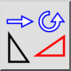
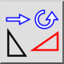
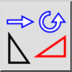
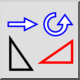

Move and Rotate
Toolbar / Icon:
 

Menu: Modify > Move and Rotate
Shortcut: M, R
Commands: moverotate | mr
Toolbar / Icon:
 

Menu: Modify > Move and Rotate
Shortcut: M, R
Commands: moverotate | mr
Moves or copies and simultaneously rotates entities.